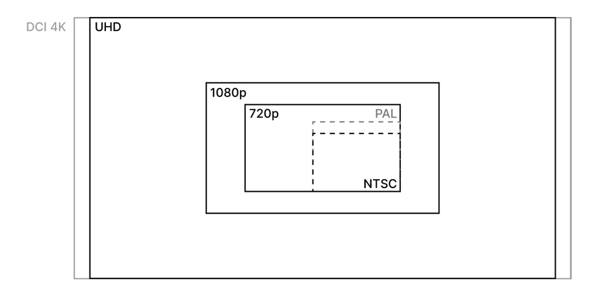

Final Cut Pro
Titles are for showing text, Generators are for creating backgrounds and filler content
Resolution
Video is essentially a series of still images, and each frame has a horizontal and a vertical dimension in pixels. Common resolutions use abbreviations, including the following:
- Ultra HD (UHD, aka 4K): 3840 x 2160
- 1080p: 1920 x 1080
- 720p: 1280 x 720

Frame Rate
If it is at all possible, shoot in the same frame rate that you want to deliver. For a "cinematic" look, you'll want to shoot at 24 or 25 frames per second (fps), although 29.97 fps is widely used too.
Why these specific numbers? A video image is updated a certain number of times per second, and that number is different for TV signals in different parts of the world for historical reasons related to electricity.
Here are some guidelines:
- In 110–120 V countries, such as the US, Canada, and elsewhere, 29.97 fps is used.
- In 240–250 V countries, such as most of Europe (including the UK), Australia, and New Zealand, 25 fps is used.
- In the international world of feature films and high-quality TV, 24 fps is the norm, although 23.98 fps is often used as it makes for easier conversion to US TV standards.
Does it matter which one you use if you're delivering online? Not much. But if you're delivering to TV or cinema, then it definitely matters, and you'll need to examine the delivery requirements carefully.
You might also have to deal with interlaced delivery (1080i) rather than progressive (1080p), but interlaced video today is only requested for TV broadcasts. Shoot and deliver in progressive formats, unless the client explicitly asks for interlaced delivery
It's also possible to record at moderately high frame rates, such as 50 or 60 fps, or even higher. While these frame rates do deliver smoother motion, most viewers find that videos shot in these modes look a little fake, unnatural, or cheap when played back at that speed, and so these higher frame rates are rarely seen outside of sports and gaming videos. Rather, these higher frame rates are more commonly used to give the option of slow motion, captured at a high speed, but played back at a slower speed
If you record at 60 fps, you can then slow it down on the timeline, showing every frame you shot for a speed of 42% on a 25 fps timeline or 50% on a 30 fps timeline. This is referred to as Automatic Speed in FCP, and it's very handy. But this is just an option — footage shot at a moderately high frame rate doesn't have to be slowed down. It's entirely possible to use this footage in real time instead by skipping frames on playback. Many shooters use these moderately high frame rates for B-roll (explained soon) to give more options during editing
Be aware that as you increase the frame rate, especially to higher numbers, the camera has to work harder, and you may have to compromise resolution as a result. Check your camera because there's often a distinction between "regular" frame rates, up to 60 fps, and "high-speed" frame rates, which can go much higher at a lower resolution, lower quality, and/or without audio. Whatever frame rate you shoot at, you should be consistent. While it's quite easy to incorporate slow-motion footage shot at any speed, your regular footage should all use the same frame rate — probably 24, 25, or 30 fps. Mixing similar frame rates can cause visible stutters (due to skipped or duplicated frames) and it's something to avoid if at all possible
Shutter Speed
A separate but related issue is shutter speed, how many times per second an image is captured, which is expressed as a fraction of a second, such as 1/50 or 1/200. As a rule of thumb, to give your footage a natural motion blur, you should try to double your frame rate to determine the "ideal" shutter speed denominator:
- 1/48 or 1/50 for 24 fps
- 1/50 for 25 fps
- 1/60 for 30 fps
If you shoot at a significantly faster shutter speed, such as 1/100 or 1/200, the natural motion blur of 1/50 or 1/60 will be lost, and anything in motion will look a little "choppy" as a result. Conversely, if you shoot at a significantly slower speed, such as 1/25 or 1/30, everything in motion will look a little blurry. It's important to note that this rule (known as the 180° shutter rule) does not apply to higher frame rates simply because any objects in motion will barely move between frames — there's hardly any blur to be had! If there's very little movement in the shot, there's not much blur in that either.
Codecs
Most compressed videos today use a compression method (codec) called H.264, although H.265 (also known as HEVC) is becoming more popular. Support for HEVC (at the time of writing) is less mature; only recent Macs with a T2 chip can decode HEVC easily. Higher-end cameras might offer other options, such as ProRes, ProRes RAW, and Blackmagic RAW. While all of these formats do increase the quality, they take up significantly more space. For example, a Panasonic GH5 records at a data rate of 100 Megabits per Second (Mbps) at 4K at 24/25/30 fps, or 150 Mbps for 4K at 50/60 fps, alongside many other options
The data rate for ProRes at the same resolutions and frame rates ranges from 470-589 Mbps, much, much higher than typical H.264 and HEVC codecs. These increased data rates require a much faster and larger recording device, typically an SSD rather than an SD card. You'll want to find a balance between quality and file size that suits your job's needs; read reviews, download files, and do the math to figure out how much space you'll need. Lastly, it's very important to know that not all cameras compress video in the same way. H.264 from one camera can be easy to deal with, while footage from another camera stutters on playback. If it is at all possible, download some original footage from a camera you're planning on using to make sure it works well in your workflow. Expect new codecs and workflow changes in the future — standards do shift over time.
Containers
Video data is encoded using a particular codec and is then stored in a container, usually a file with a .mp4 or .mov file extension. A container is not a codec, however; H.264 can be found inside many different types of containers, and a .mp4 file might contain video data in one of many different codecs. Still, you'll probably be fine; just look at the extension at the end of the filename to see which kind(s) your camera makes. However, there are cameras out there that don't produce single contained video files at all. The AVCHD format, for example, spreads important data out on separate files across different subfolders, meaning you can't simply copy a file from an SD card and have a single video clip. Instead, the video data needs to be rewrapped inside a container format that FCP can use by importing directly from the SD card. Other cameras do contain their clips in single files (yay!), but they restart their file numbering on every card (boo!), leaving you to manage multiple files with identical names. Where possible, I prefer to avoid AVCHD and other fussy container formats. A standalone video clip with a unique name using a standard codec is the gold standard, and plenty of cameras make files like this. If you're choosing the camera, don't bend over backward to support one that makes your life difficult.
Optimized media (Pro Res 422)
Pro Res 422 is an Apple-designed "mezzanine" codec that is relatively large, high-quality, and easy to edit. While most compressed camera codecs are inter-frame, describing their image data in relation to previous frames or even frames coming up soon, ProRes is an intra-frame codec, like a series of still images that don't refer to one another. This is less efficient and takes up more space, but it's much simpler for your Mac to work with
ProRes 422 is actually just one codec in a family of others (including ProRes 422 Proxy, ProRes 422 LT, ProRes 422, ProRes 422 HQ, ProRes 4444, and ProRes 4444 XQ)
optimized footage uses the "vanilla" ProRes 422 codec. Regardless of the original camera, ProRes uses around the following amounts of data:
- ProRes 422 — 1080p, 24 fps: 117 Mbps or 14.6 MB/s
- ProRes 422 — UHD 4K, 24 fps: 471 Mbps or 58.9 MB/s
ProRes 422 data rates are far higher than most camera-original data rates, but that's probably OK for smaller jobs. Optimized media will be stored in the Library, along with the original media, and as the original media is not deleted, you will need plenty of space. If you have that space, there's just one extra step in your workflow:
- Import the original media.
- Transcode some or all of the media to optimized media (ProRes 422).
- Edit.
- Export.
For longer jobs, optimized media might require terabytes of space that you don't have, and you might need to use a different approach: proxies.
Proxy media
While optimized files are a full-quality replacement for original media, proxy files are a medium-quality (and often lower-resolution) option that is only intended for use during the editing process. It'll look softer and possibly less pretty than you'd like, but that's fine while you're editing. Proxy media is quick to work with, and it doesn't take up nearly as much space as optimized media does. Previously, ProRes Proxy was the only way to go, at a data rate like this:
ProRes Proxy — 1080p, 24fps: 36 Mbps or 4.5 MB/s
From 10.4.9 onward, you can choose to use the small, efficient H.264 codec, at the resolution of your choice. If you want to save a ton of space, you can use a frame size as small as 12.5% of the original file. It's still fast, and the process is much the same, but these files will be much smaller than a full- or half-size ProRes Proxy:
- H.264 — 1080p, 24fps: 7.8 Mbps or 1 MB/s
- H.264 — 540p, 24fps: 3 Mbps or 0.375 MB/s
Note that if proxies have been created and you want to change their resolution or codec, you'll have to delete them (with File > Delete Generated Library Files or File > Delete Generated Clip Files) before recreating them at a different size.
Most kinds of original media can be optimized, but ProRes, HDV, and DV footage cannot. MP3 audio files are converted into uncompressed formats automatically on import, so you can't optimize them manually either.
Viewing proxy media
If you create proxy files, you also have to choose to view them. You can choose to view Optimized/Original files exclusively, proxy files exclusively with Proxy Only, or use Proxy Preferred (new in 10.4.9) to show proxy if available, and the original or optimized file if the proxy isn't available or hasn't yet been created. That last option is what you want while you're editing with proxies, and when you're done with the edit and before you export, switch back to the original quality media. To the workflow, then — if you can't work with the original media and an optimized version would be too big, this is the best way forward:
- Import the original media.
- Transcode the media into a proxy format.
- In the Viewer's View menu, switch to viewing Proxy Preferred.
- Edit with proxy media.
- In the Viewer's View menu, switch back to viewing Optimized/Original.
- Export with the optimized/original media.
Proxy workflows can save a lot of space, but if you view proxy media, that's what you'll export. Always remember to switch back to Optimized/Original before sharing — though you'll be warned if you don't.
Skimming
Probably the first habit that most editors need to break when shifting to FCP is that of clicking. There's simply no need to click on a clip before playing it back, and in fact, it can cause issues if that click turns into an accidental drag and changes the current selection. Instead, simply hover your cursor over a clip's filmstrip, just before a particular moment, then press the spacebar
Playback Shortcuts
| Shortcut | Description |
|---|---|
| Space | Hover in the timeline, then press Space for play/pause |
| L | Plays forward |
| K | Pauses |
| J | Plays backwards |
| ↓ or apostrophe (') | jumps to the first frame of the next clip |
| ↑ or semicolon (;) | jumps to the first frame of the previous clip |
Repeatedly press J or L to double the playback speed in that direction: 2x speed, 4x speed, 8x speed, and so on. Hold K and then tap L to move a single frame forward. Hold K and then tap J to move a single frame backward. Hold K and then hold J or L to play in slow motion with slowed-down audio.
The horizontal arrow keys are important too
| Shortcut | Description |
|---|---|
| → | Moves forward one frame. |
| ← | Moves back one frame |
| ⇧ → | Moves forward 10 frames |
| ⇧ ← | Moves back 10 frames |
| ⇧ ↓ | Selects the next clip |
| ⇧ ↑ | Selects the previous clip |
All these keys also work with hovering, so you can hover to where you want to begin, then press J to play backward. If you click, rather than hover, you will also select the clip you clicked on
Extended Short Cuts
To review a particular part of a clip, you can certainly hover or click just before a moment of interest, then simply play. But the following technique is often more useful:
- Activate Looping with View > Playback > Loop Playback (⌘L)
- Press ? to Play Around Edit
This is a great way to repeatedly see part of a clip as the Playhead jumps a few seconds back, plays through the selected point, and plays a few seconds forward before starting again. It's useful in an edit on the Timeline too
Clips
| Shortcut | Description |
|---|---|
| I,O | To select part of a clip |
| F | To mark as faviorate |
| U | To remove faviorate |
| ⌥ X | To remove selection |
| ⌫ | Press the delete key (not forward delete) to mark selection as Rejected |
| ⌥M | To create a Marker and edit its name |
Pressing M alone is sufficient if you don't want to name a Marker. You could also press M twice to create it and then edit it, if you are careful not to move the mouse between the two keypresses
A Marker can be clicked on to show its name in the Skimmer Info (toggle with ⌃Y if you don't see it) above your cursor, and if Snapping is active, then you'll hit Markers easily while you skim. Snapping is a feature that will be used more during the editing process, but you can press N to toggle it on or off at any time
Basic trimming with the Magnetic Timeline
Trimming, at a basic level, usually involves moving the edges of a clip to see more or less of it.
When you hover over the start or end of a clip, you'll see that the cursor changes to an icon that represents the start or end of a clip, with arrows on either side to indicate movement, and a filmstrip beneath. That filmstrip points to the clip that's going to be adjusted, and also indicates that this is an operation that "ripples" — that is, it won't leave a gap. To many editors this is a Ripple trim or a Ripple edit, but here, we'll just call it a trim
When dragging edits, you may find that Snapping helps, but it can equally get in the way. If an edit point unhelpfully snaps to the Play-head (or anything else), just disable Snapping by pressing N during the operation
Trimming with the keyboard Editing with the keyboard is effective, and if you're an experienced editor trying to nail those story beats, you'll like these:
- Click near the start or end of a clip on the timeline to select the edit point.
- Move that edit point one frame to the left with the comma key or one frame to the right with the period key. Use ⇧comma or ⇧period to move by 10 frames.
If you're trying to clean up an edit by trimming a few frames from a sequence of clips, you'll want to know a few more keys
| Shortcut | Description |
|---|---|
| [ | Selects the out point of the clip to the left of the Playhead. |
| ] | Selects the in point of the clip to the right of the Playhead. |
Trim Start and Trim End commands are a great way to make clips shorter, and they can be used while the video is paused, or while it's playing
- Press ⌥ [ to use Trim Start, moving the in point of the current clip to the current Playhead or Skimmer.
- Press ⌥ ] to Trim End, moving the out point of the current clip to the current Playhead or Skimmer
Extending edits
Occasionally, you might want to make a clip longer, rather than shorter, and there is a way to do that using the keyboard and the mouse together:
- Select an edit point on a clip.
- Skim over a point near that edit where you want the edit point to be.
- Press ⇧ X to perform an Extend Edit.
What did that do? Well, if you skimmed to a point inside the clip, it's just like using Trim Start or Trim End — it made the clip shorter. But if you skimmed to a point outside the clip, the clip will become longer; it's like you've grabbed that edit point and moved it. So why not just grab it with the mouse? Well, this operation can also be done entirely with the keyboard while the video plays, so if you prefer to edit by feel, it's a good way to work.
Switching Tools
If you tap a key, you'll switch to that tool. But if you hold a key, you'll only switch to that tool temporarily, for as long as you hold it down
- Press B to switch to the Blade tool.
- Click on a clip to split it into two clips at that point:
- The new edit is indicated with a dashed line for now. It's called a through edit because the two frames around the edit are actually sequential. If you change your mind, through edits can be selected (with the Select tool) and deleted, healing the clip as if it was never bladed.
There's another way to blade that gives the same result, but without switching tools. As the video plays back, you can press ⌘B to break up the current clip at the Playhead, and the strength of this approach is that you can blade a clip while it's playing. That's certainly handy from time to time, but Blade (either way) shouldn't be your first choice. If you want to make a clip shorter, Trim Start and Trim End are more efficient. If you want to delete part of a clip, it's not the best for that either
Selecting part of a clip
It's much easier to delete part of a clip with this tool with the following steps:
-
- Press R for the Range Selection tool.
-
- Click on the clip where you want the edit to begin, then drag left or right and release where you want it to end, on the same clip or another clip
This process makes selecting in the Timeline just like selecting in the Browser. Just like the Browser, you don't need to use the mouse at all. If you'd prefer to use the mouse, you don't even need to switch tools, and the process is even simpler:
- Skim to the start of the edit and press I
- Skim to the end of the edit and press O
At this point, a handy shortcut could be /, to play just the selected region. If you've selected part of a single clip, you can press ⌥ \ to trim the selection to remove the unselected areas.
Connections, Cutaways, and Storylines
A cutaway is the term for video placed above the main story to hide edits underneath
Removing the ums, ahs, and pauses leaves visible jump cuts: two sequential shots with almost, but not quite, the same content.
To hide the edits, an editor places a cutaway above the Primary Storyline, and while you still hear the words below, you don't see the jump cut.
How does the editor find the right clip to "cut away" to? Usually, they use B-roll that's related to the current topic. An edit has to feel justified, so you can't just put any old clip on top. This is why editors want relevant B-roll; if you don't have enough, you won't be able to cover all of the edits you want to.
Not all cutaways are B-roll, though. You might cut away to a reaction shot such as an interviewer nodding or a reverse angle of a character in a dramatic piece reacting to another. It could be a wider angle of the same scene, a close-up of an important detail, or something else. Cutaways allow timing to be adjusted beneath them, and by shifting the audience's gaze, can help you to maintain an illusion of continuity
As well as covering up an edit, cutaways can also be used above a continuous, unedited shot to break up a shot that's been on-screen for too long or to hide something. The defining factor of a cutaway is that it sits above the Primary Storyline rather than within it
you'll place clips above other clips simply when you want to cover something up or you want to stay flexible with regard to its position in time. You'll also use connected clips when you use keying (green screen) or picture-in-picture effects
Understanding connections
Probably the biggest difference between a traditional editing timeline and the FCP Magnetic Timeline is the way in which clips sit above or below other clips. In a traditional editing application, a clip's timecode is the most important factor: clips sit at a point in time, and any relationship between two clips positioned above or below one another is merely implied. Such clips can move out of sync with each other if you're not careful. Here in FCP, clips on the Primary Storyline form the spine around which everything else is built: clips above or below are always connected to a clip on the Primary Storyline, no matter how many clips there are in the stack. When a clip with connections is moved, the connected clips also move, and when a clip with connections is deleted, the connected clips are also deleted. Logically, this makes sense: a shot of a car should be connected to a person talking about that car. It's even clearer for sound effects: a sound effect of a car backfiring belongs to a specific time within a shot of a car. Music behaves a little differently though.
In the Viewer, you'll only see the clip that's highest in the stack at a point in time, and if the wrong clip is on top, you can drag clips directly up or down to change the stacking order. (A quick tip: hold ⇧ as you move a clip up or down to avoid also moving it in time.)
Grouping connected clips in Storylines
If you place music or a longer voiceover in a Storyline, you can use the Range Selection tool to select anything you don't want, then press delete to close gaps automatically. Conversely, if you do want Gap clips in a Storyline (and you can make one with ⇧delete), they can be extended in time to increase the length of a pause.
Controlling and overriding connections
First, if you want to connect a clip at a different point, hold ⌥ ⌘ and click on the connected clip. The connection will now be shifted to the clicked point in time, connecting to the clip on the Primary Storyline at that timecode. The same applies to Storylines, but you'll have to hold ⌥⌘ and click in the gray bar just above the clips instead
Moving connections like this lets you change which Primary Storyline clip "owns" a connected clip. As connected items are moved or deleted when a Primary Storyline clip is moved or deleted, this lets you decide which primary clips control those connected clips
If you don't want the connected clip to move:
- Reposition connected clips to a point preceding (not following) the clip you're about to delete. This isn't always possible.
- Use ⇧delete instead of delete to replace a clip with a Gap clip. The connected clips remain in the same spot with the same connection points:
There's one more solution that warrants deeper discussion: Hold down the ` key (grave, on the same key as ~ or tilde) to temporarily override connections on primary clips you're rearranging or deleting.
When holding `, you'll see an additional icon appear on your cursor. The "override connections" mode is an important toggle: any clips connected to the clip you're moving or deleting will stay where they are as if they weren't connected at all
Three-point editing and more
You may not have considered it, but most edits are defined in terms of the source clip (which part of a clip you want to use) rather than the timeline (where do you want the clip to go). However, it's possible to prioritize the timeline instead, and this is sometimes called "three-point editing," because technically, at least three points are defined every time you add a clip. It's a traditional method, and here, you'll learn about how to mark part of the timeline to receive a clip and how to connect or overwrite a clip to that region
So far, we've added connected clips in a somewhat haphazard, less controlled way, by selecting a few seconds of a clip and then pressing Q. That means that the three points are the In (1) and Out (2) on a Browser clip, plus an In (3) point on the timeline. But you can flip that "source clip dominance" around by explicitly placing two of those points on the timeline. To connect a new clip in a specific region, do the following:
- In the Browser, skim over a clip you'd like to connect at a point you'd like to start from, and press I to mark an In point.
- In the timeline, skim to a point where you want to add the connected clip, and press I to mark an In point.
- Skim to where you want to end the connected clip.
- Press O to mark an Out point:
- Press Q to connect the selected clip: If the source clip has enough media to fill the selected region of the timeline, a clip will be connected to just that region. It'll start from the In point you chose in the Browser, and run for the length you chose in the timeline, but the Out point in the Browser (chosen or implied) will be ignored. The Skimmer is also ignored, if present.
Backtiming
From time to time, it can be more important what's at the end of a connected clip rather than the beginning, and there's a solution for that too. Instead of picking an In point in the Browser, press O to pick an Out point. And instead of pressing Q to connect, press Shift Q to perform a backtimed connect. This option places the Out point from the Browser clip at the Out point in the Timeline, then uses as much media before that point as the timeline region requires.
t's possible to Overwrite with two points on a source clip and a third on the timeline, but it's more common to put two on the timeline, as before:
- In the Browser, skim over a clip you'd like to connect, at a point you'd like to start from, and press I to mark an In point (or O to mark an Out point).
- On the timeline, skim to a point where you want to add the connected clip, and press I to mark an In point.
- Skim to where you want to end the connected clip.
- Press O to mark an Out point.
- Press D to Overwrite the selected clip, or ⇧D to Overwrite with backtiming (from the Out point back)
What's different? This isn't a connection above the Primary Storyline but a replacement of the clips currently on the Primary Storyline. This is not an easily reversible operation, and any clips or regions within the selection will be entirely overwritten. Why do this? Well, I confess that I almost never do. If you want to use the Primary Storyline rather than connecting clips, then I can see the appeal, but I find connecting a clip above does what I want and lets any audio from the primary be heard. One exception: you might want to Overwrite a clip into a connected Storyline. That's possible, but you'll have to select the Storyline (not a clip within the Storyline) before you press D or ⇧D. Again, that's not something I usually do, as I prefer to Replace — but that's coming up in the next chapter. Lastly, let's clarify copy and paste
Copy and paste
Copy and paste are key operations in many applications, and while they're here too, connections can complicate matters just a little. If you copy a connected clip, it'll stay connected when you paste it, which makes sense. And if you copy a Primary Storyline clip, it'll paste to the Primary Storyline, performing an Insert operation and potentially breaking up a clip under the Skimmer. All of that makes sense. If, however, you want to copy from the Primary Storyline and then paste as a connected clip, you'll need to use Edit > Paste as Connected Clip (Shift V) instead of a regular paste. There's no complementary operation to "paste as primary" but it's easy to do a regular paste and then drag it into the Primary Storyline if that's what you want.
Editing Tools
You can use keys as a persistent switch, or a temporary one, as follows:
- To switch to the Trim tool persistently (that is, until you switch to another tool), just press the T key and let it go.
- To switch to the Trim tool temporarily, hold down the T key, perform your trimming operations, and then release the T key.
If you're using the "temporary" strategy, your previously selected tool will be selected once you release the key. This technique works with all of the tool shortcuts.
Rolling an edit
While a regular trim adjusts an In point or an Out point on a clip, a Roll edit adjusts the Out point on one clip and the In point on the next clip at the same time, by the same duration.
While it works best on two neighboring clips in the Primary Storyline, it can also work on two clips in a connected storyline, or even on two independently connected clips that have no gap between them.
Why would you want to do that? Because it lets you trade one clip's length against another without causing a ripple down the timeline. The first clip gets longer while the second clip gets shorter, and no other clips move at all.
Performing a Roll edit
Because one point isn't always enough, let's now try using a Roll edit to adjust two points, as follows:
- Press T to switch to the Trim tool.
- Hover over the point between two clips, and you'll see the cursor shown here
- Click and drag left or right to perform a Roll edit
This time, you'll see both frames in the two-up display in the Viewer changing. You'll also notice that the overall length of the timeline stays the same and that no other clips are affected in any way. The Roll operation is therefore extremely helpful when you're getting closer to the end of an edit and you don't want to move things around anymore.
As you might expect, you can only Roll a clip as far as the media allows. If you drag all the way to the start or end of a clip, you'll see a red clip edge that stops you moving any further
While you probably won't have any trouble triggering the Roll operation, the Trim tool still actually allows you to perform a regular one-point trim operation — you just have to be more specific about where you place the mouse. As you move toward the center of where two edits meet, the cursor switches to indicate a two-point Roll, but if you move a little further toward either side, the cursor will change back to indicate a regular one-point trim
To select two points for a Roll edit press \ this selects both Out and In points around the playhead.
The \ key is to the right of [ and ] on North American keyboards, so it's physically nearby. It's entirely up to you if you prefer a hybrid mouse/keyboard approach or the keyboard-only way instead, but if you would prefer to hover with the mouse and then switch to the keyboard, be sure to activate Snapping (N)
Using a Slip edit
With the Trim tool (T) selected, click on the middle of a clip (not near the left or right edges) and drag sideways to perform a Slip edit The moving filmstrips make this a natural operation. If you drag to the left, you'll use a later part of the clip, and if you drag to the right, you'll use an earlier part of the clip. You can tell what's happening by watching the filmstrip thumbnails, and the Viewer will show you the clip's new In point and Out point as you drag.
There's a handy analogy here. Think of a clip on the timeline as a window that lets you see part of its whole source clip. The Slip operation lets you grab the whole source clip and move it backward and forward to reveal a different part of it. Rolling and one-point ripple-trim operations change the edges of this "window", but Slip doesn't — the timeline clip stays the same length, and you just use a different part of it.
Using a Slide edit
You can think of a Slide edit as a Roll with a clip in the middle. When you Slide, you move the dragged clip to the left or right, but the clip you're dragging only moves in time, and its contents stay the same. The Out point of the previous clip and the In point of the next clip are both changed, as if those two clips are rolling neighbors. The clip in the middle is repositioned within the timeline, but otherwise it's unchanged. So, how do you do it? Here's how:
With the Trim tool (T) selected, hold ⌥ and click on the middle of a clip (not near the left or right edges) and drag sideways to perform a Slide edit.
Here, I'm ⌥-dragging the second clip, meaning that the Wide clip before and the close-up clip after are adjusted in a Slide operation. For many editors, this isn't a very common task because it actually crosses over neatly into a common operation with connected clips. If the active clip in this example were above the other clips — a connected clip rather than a Primary Storyline clip — then moving the clip left or right would give the same results as Sliding on the Primary Storyline.
Indeed, if I know I'm going to shift a clip around in time to get it just right, I'd connect it above, and so I don't Slide very often at all. But if you do Slide, you'll see a two-up display in the Viewer, just as you do with Roll and Slip. There's no two-up display when you move a connected clip. Another reason to choose to Slide is that it simplifies your timeline, keeping the number of vertical clips to a minimum. While one or two layers of connected clips aren't a problem, an edit is easier to understand at a glance if it's simple, and it also means you don't need as much screen space to see your entire timeline.
As with Roll and Slip, there's no two-up display for nudging with the comma and period keys. But you'll need the mouse at some point: there's no keyboard shortcut that can prepare a clip for a Slip or Slide nudging operation. To prepare for a keyboard-based Slip or Slide, you'll have to press T to switch to the Trim tool, and then do the following:
- Click on the middle of a clip to prepare for a Slip operation
- ⌥-click on the middle of a clip to prepare for a Slide operation
Only then can you use comma and period, with or without ⇧, to Slip or Slide by 1 or 10 frames.
Softening audio with split edits (J- and L-cuts)
Way back at the rough-cut stage, the emphasis was on making an edit sound good, and then to hide the edits with B-roll. That's still a great way to work, but split audio edits allow you to trim the audio and video components of a clip at different points from one another, allowing you to hear a speaker before you see them (J-cut) or hear them after you see them (L-cut)
Cutting the audio and the video separately softens the edit, and (crucially) it's not something that's easy to do with simpler editing software. Using this technique will lift the quality of your edits, even if the client isn't quite sure why.
Expanding and collapsing audio
Don't detach audio, unless you have a really good reason. The Detach Audio command is there, under the Clip menu, but it's rarely the right way to go because it makes it far too easy to move a clip's audio out of sync
Instead, to separate the audio component of a clip temporarily, do the following Double-click on a clip's audio waveform in the timeline, or choose Clip > Expand Audio
When you expand audio like this, the audio part of a clip (the visible waveform) jumps down from the video. If this is the first time a clip has been expanded, the video and audio edges will be aligned, but they can all now be edited — trimmed or Rolled — separately. Trimming and Rolling is the key to softening edits
If you want to visually reunite expanded audio components, you can — through a feature called Collapse Audio. To use this, proceed as follows: Double-click on a clip's audio waveform in the timeline, or choose Clip > Collapse Audio
Expanded audio will always keep its current length, so if you adjust the video component of a clip, nothing happens. However, a collapsed clip will remember any offset that its audio start and end points had while expanded, and any offset will be maintained if you trim the clip's unified start or end points after collapsing. This can mean that you would hear a different part of the clip, which may or may not be an issue
If you're confused just where the audio is and want to expand everything, select the whole timeline (⌘A) and use the shortcut (⌃S) to perform Clip > Expand Audio for all clips at once. Conversely, repeat the ⌃S shortcut to Collapse Audio for all clips if you want to simplify
Overlapping audio edit points
When you've taken out part of a clip of a person talking or want to run two clips of different people together, you'll probably want to slightly overlap the audio of the two clips to avoid problems. If there's a gap between the two clips, there can be an audible dip in volume as the background noise disappears, but with an overlap, this simply won't happen. Of course, some clips are easier to edit than others, and you'll experience many different issues in different jobs
Overlapping two edits is often necessary to smooth out the edges of words, especially if you're having to extract good words that were said right next to bad words. If you've taken out a few extraneous words (an "um," an "ah," or more) from a single person's speech to create a tighter soundbite, you should find this process fairly simple, and it's been made easier with a new feature in 10.4.9:
- Use the Range Selection tool to select the unwanted part of a clip.
- Press delete to remove it.
- Select both clips at once, then press ⌥T (or Modify > Adjust Audio Fades > Crossfade) to add a Crossfade.
The clip's fade handles are now activated, and the two clips are overlapped by a duration set in Preferences, under Editing. That might be enough; you can play it back to see whether it sounds good. From there, you can adjust the results with a more manual process if you wish:
- Expand the audio on each of the audio waveforms.
- Trim the audio components to include exactly the sections you want to use.
- Trim the video components to adjust the timing and how the audio clips overlap.
- Connect a B-roll cutaway above to disguise the jump cut.
Don't be dishonest, but also don't be afraid to make a speaker sound smoother or more professional. Tweak as much as you want to — the cutaway hides all that mess
Fading audio edits
As you've seen, adding a Crossfade exposes a clip's fade handles, but every audio edge contains the same built-in fade handles. They allow you to fade that audio in or out and are a vital part of making audio edits seamless. Audio fades are also a good way to create a smooth transition between one music track and another.
You should use fades on almost every audio edit, to make sure that every audio clip starts in silence and ends in silence. If an audio clip cuts in the middle of a noise, you can sometimes hear a click or a pop as the audio cuts in. To make applying audio fades easier, you can apply shortcuts (with Final Cut Pro > Commands > Customize, ⌥⌘K) to the following otherwise hidden commands:
- Apply Audio Fades
- Remove Audio Fades
- Toggle Audio Fade In
- Toggle Audio Fade Out
While the handles are the same on each clip, a Crossfade defaults to the S-curve fade style, and a standard clip's edges will default to +3dB. You can choose your own style with a right-click on the handle.
Editing numerically and with the Precision Editor
Not every editor will want to be precise; editing is, after all, an art more than it is a science. But from time to time, it can be useful to set the length of a clip (or all your clips) to a specific value, and if a client asks for "a second more on that clip", it's great to be able to achieve it in a click and four quick keystrokes (+, 1, period, return). The techniques you'll learn here cover editing with numbers, setting duration precisely, and looking deeper with the Precision Editor.
Trimming using numbers
While the comma and period shortcuts move a selected edit point (or clip) by a single frame, you can use plus and minus with timecodes to move by any amount. To illustrate how to respond to the client who asks for "a second more," follow these steps:
-
Select an Out point on one of your clips You could do this by simply clicking on the Out point, or by moving the playhead to that point with keys, then selecting it with the ] shortcut. While ] selects the Out point, use [ to select the In point, or \ to select both for a Roll edit
-
Type +100, then return, which will result in The timecode display under the viewer will change when you type the "+" Movements to the right use a plus, and to the left use a minus. Timecode entry is interpreted differently, depending on how many characters you type, as follows:
-
If you enter one or two digits, you're talking in frames.
- If you enter three or four digits, the first two digits are seconds and the last two are frames.
- If you enter five or six digits, the first two digits are minutes, the next two are seconds, and the last two are frames.
- If you enter a period (.), it counts as two zeros: "00".
- If you enter a number greater than the number of units available (such as 80 frames or 65 seconds), then the extra amount is converted to the next unit up.
In the timecode display underneath the Viewer, you'll see the result calculate itself as you type. Here are a few examples:
- +215 = move the selected edit point 2 seconds and 15 frames to the right
- +265 = move the selected edit point 4 seconds and 15 frames to the right (in a 25 frames per second (FPS) timeline, where 2 seconds and 65 frames = 4 seconds + 15 frames)
- -50 = move the selected edit point 50 frames to the left (just over or just under two seconds, depending on the frame rate)
- -2. = move the selected edit point 2 seconds to the left (in any frame rate)
- +5.. = move the selected edit point 5 minutes to the right
Depending on which edit point you select, either plus or minus could make a clip longer or shorter. In points moving to the left make a clip longer, as do Out points moving to the right. Roll edits, of course, make one clip longer while another gets shorter, so select the edit point(s) however you wish, and then type away.
Moving a clip rather than an edit works in exactly the same way, but beware. Connected clips can move freely, but if you move a Primary Storyline clip with numbers, you'll be performing a Slide operation, stealing time from one clip and giving it to the clip on the other side.
No matter what you want to move, you can use the following general-purpose precision workflow:
- Select an edit point on one of your clips with the Select tool, select two edit points with the Trim tool, or select a whole clip.
- Type plus or minus, then a timecode, then return.
Setting clip duration
What if your client asks for a clip to be not "a second longer" but "exactly 4 seconds"? That's easy, but you'll need to use something other than plus or minus. The command is Modify > Change Duration but you'll use ⌃D. To set duration, do the following:
Select one or more clips. Type ⌃D, then a timecode (without ⌃), then return. This will result in the timecode readout under the Viewer changes to show the new duration
Here are some examples, remembering that you only hold ⌃ while pressing D, and you'll need to press return at the end of each one:
- ⌃D4. = make the selected clip 4 seconds long, an absolute change
- ⌃D+2. = make the selected clip 2 seconds longer, a relative change
- ⌃D1 = make the selected clip 1 frame long — handy for time-lapses or animation sequences
You can very quickly fill a timeline with videos or stills of a certain length by selecting all the clips at once, and then do the following:
- Press E to append to the Timeline.
- Click on the Timeline pane.
- Press ⌘A to select all clips at once.
- Press ⌃D3. to set all clips to 3 seconds long.
- Press ⌘T to add the default Dissolve transition between all these clips, as illustrated in the following screenshot:
Moving to a specific timecode
If you want to jump to a specific timecode on the timeline it's a similar process, but you'll need to activate the Move Playhead Position command before typing that timecode. The shortcut is ⌃P, and should be followed immediately by a timecode in seconds and frames.
Using the Precision Editor
This separate editing mode provides a way to focus on just one edit at a time, to see how much additional media is available for the current edit, and to perform trims and Roll edits in existing and new ways. To enter this mode, simply double-click on an edit in your timeline, and to leave, press Escape
The timeline now splits in two, with a line of gray boxes indicating Primary Storyline edits in the middle of the screen. One edit is active at a time, and earlier clips are shown above while later clips are shown below. You can switch to different edits in your timeline by clicking on them or by using the following shortcuts: semicolon or ↑ to go back, apostrophe or ↓ to go forward.
Dragging on the gray boxes in the center of the current point performs a Roll edit, but in this mode, you can see what you'll be revealing because you can see the filmstrips for the unused parts of the prior and upcoming clips
If you move the mouse up to access an Out point or down to access an In point, you can click and drag it left or right to perform a regular trim. Two less obvious ways to trim are to drag on either side of the upper or lower filmstrip to move the In or Out point, or even just click on the filmstrip to set that point as the new In or Out point. And all the nudging (comma, period), edge-selecting ([, ], ), Trim Start, Trim End, and Play Around Edit (⌥[, ⌥], ⇧/) shortcuts work here too.
While some people simply never use this mode, it's a great way to visually verify every edit in your timeline. Also, if you're reviewing an edit with a client who really wants to know which media lies unseen, this is a great way to show them you're making the right choices. Still, if you don't like it, don't use it.